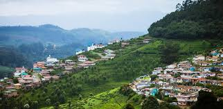

Munnar, Kerala - The Tea Garden Paradise
Coorg, Karnataka - Scotland of India
Ooty, Tamil Nadu - Queen of Hill Stations
Hampi, Karnataka - A UNESCO Heritage Marvel
Alleppey, Kerala - The Venice of the East
Rameswaram, Tamil Nadu - The Spiritual Island
Pondicherry - French Colonial Charm
Lush tea plantations, misty hills, and waterfalls
Visit Eravikulam National Park, Mattupetty Dam, and Tea Museum
Coffee plantations, lush greenery, and serene landscapes
Visit Abbey Falls, Dubare Elephant Camp, and Raja's Seat

Picturesque hills, colonial charm, and pleasant weather
Explore Ooty Lake, Botanical Gardens, and Nilgiri Mountain Railway
Ancient temples, ruins, and surreal landscapes
Visit Virupaksha Temple, Vittala Temple, and Matanga Hill
Stunning backwaters, houseboats, and tranquil beaches
Experience a houseboat stay, Alappuzha Beach, and Kumarakom Bird Sanctuary

Sacred temples and scenic coastal views
Visit Ramanathaswamy Temple, Pamban Bridge, and Dhanushkodi
A unique mix of French and Indian culture
Explore White Town, Auroville, and Promenade Beach